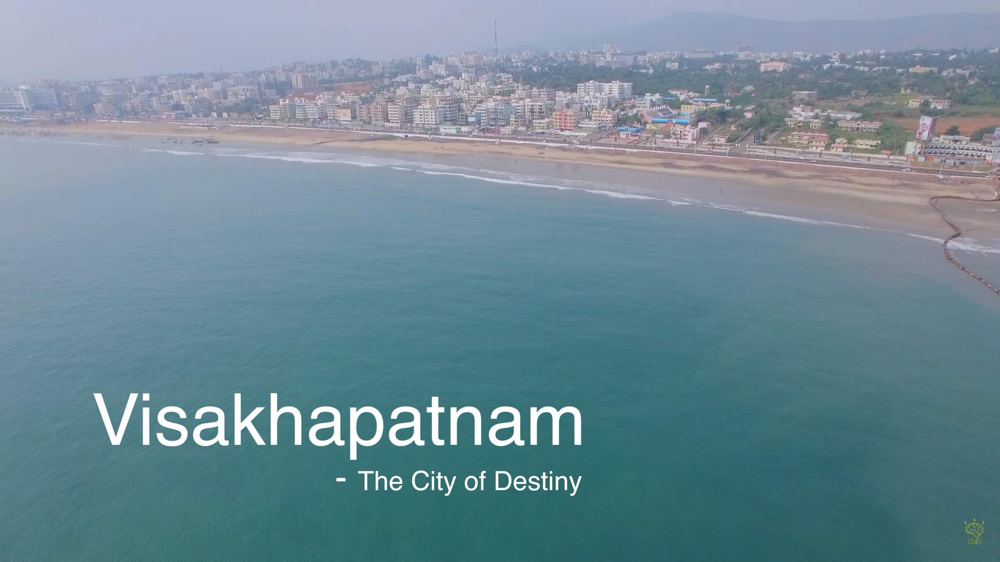

About Me

I come from Visakhaptnam also called as the City of Destiny which is the largest city in the state of Andhra Pradesh in India. I have completed my primary and secondary schooling there.
Ever since, I was a child studying Geography during my schooling, our teacher used to quiz us on places and wanted us to locate them on the world map. Even though it was interesting, I always used to wonder how on earth would people be able to remember all the places on the globe without having a map in hand. It will be a tedious task for people to carry a map to each and every place they go. Then I gradually started thinking, if there could be a better way of searching and travelling places without the need of paper-map. Thats when I got to know about Google Maps in 2005 which initially started as desktop app later emerged as a web-application and the rest is history. I was very fascinated and excited to see them map the entire world in the most accessible format for a layman which made me decide to explore more and pursue a career in this thereby choosing Geoinformatics as my major for Bachelor's Degree. I was fortunate to know about the beauty of Remote Sensing and Geographic Information Systems (GIS) and wanted to enhance my knowledge by working, studying, understanding and applying these technologies in wide variety of application areas.
Experience Summary
☑️Texas A&M Forest Service - College Station, TX
I currently work as a
Geospatial Database Administrator & Developer with Texas Forest
Service (TFS) which is a state government agency chartered by
Texas Legislature for managing and safe-guarding Texas Forests.
Texas was the first state in the US to establish its forestry agency under a
land-grant university system (Texas A&M), hence named
Texas A&M Forest Service . In this role, I primarily work on
- Geospatial Architecture Design
- Geospatial Enterprise Administration
- Geospatial Application Development
- Geospatial Data Science, Analysis
- Leveraging UAS Technology within agency for wildfire needs
☑️Verizon Data Services - Tampa, FL
As a GIS Developer I worked in the Fiber Inventory Management(FIM) geodatabase team. I was involved in the development of custom geoprocessing scripts for validating the geospatial fiber network data submitted by the vendors to Verizon. I have also worked with the 3-GIS Dev Team for sequential deployments.
☑️The Retail Strategy - Austin, TX
I have worked as a GIS Developer in an independent contracting
role with Retail Strategy.As a part of this role, I worked on developing custom widgets like AOI Stats, View links using ArcGIS WebApp Builder SDK. I have also developed custom infographic templates and integrated them into the Business Anlyst Online.
☑️Lee and Associates Commercial Real Estate Services - Dallas, TX
I have been the Research and GIS Coordinator for Lee&Associates, where I was providing Geospatial Analytics solutions for various clients and real-estate brokers.I also served as the 'GIS Data Researcher' for the Spatial CRM platform Slick Cactus which enables real-estate professionals for interactive property search, team and enterprise collaboration, workflow managmenet and dynamic mapping.
☑️ESRP Real Estate - Dallas, TX
I worked as a GIS Analyst Intern with ESRP during Fall
2017 and Spring 2018. At this role, I worked in the Site Selection
and Analytics Team majorly focussing on demographic analysis, data
visualization, developing and proposing solutions for real-estate
clients using Tableau, Alteryx, Arc Map, ArcGIS Business Analyst,
ArcGIS Pro have also standardized the map-making workflow by
automating the heat mapping process using ArcPy and Python.
Links to access -> Fall 2017 Report
Spring 2018 Report
☑️The City of Dubuque - Iowa
I worked as a GIS Technician Intern with City of
Dubuque in Iowa during Summer 2017. As a part of this role, I worked
on three major projects namely Parking Management System through
Collector for ArcGIS & Explorer for ArcGIS, Transit Mapping for the
City called 'The Jule' and Trash Collection Optimization system.
Know More
☑️Infosys Limited - Hyderabad, India
At Infosys, I was a GIS Systems Engineer from 2014 to 2016 where I was involved more on the system engineering side of GIS. During my tenure, I worked with various oil and gas clients in setting up their GIS Server Infrastructure and performing spatial ETL processes. I also collaborated with on-shore development team for implementing the technical design as per business needs.
☑️Indian Institue of Technology Bombay (IITB) - India
I was selected by the Indian Academy of Sciences,Bangalore for
working as a Summer Research Fellow in 2013 in the Remote
Sensing Division of Civil Engineering Department at IITB.
During this period, I have worked on automating estimation of Land
Surface Temperature and Ground Surface Reflectance from LANDSAT TM
Thermal Infrared and Optical Data.
Click to view the Final Report
Education
Master of Science - Geospatial Information Sciences
Bachelor of Technology - Geoinformatics Engineering
Licenses & Certifications
☛ FAA Certified Part 107 Remote Pilot
In order to fly a drone under FAA's Part 107 rule, we must obtain a Remote pilot Certification from Fderal Aviation Administration (FAA) which demonstrates that we understand rules, regulations, operating requirements and procedures for safely flying drones.
☛ URISA - Captivating Map Making
URISA is a non-profit association of geospatial professionals using GIS and other major information technologies to solve various challenging problems for all levels of government. The professional development hours obtained count towards obtaining the GISP Certification.
☛ Google Analytics for Beginners
Google Analytics is one of the leading analytics platform for performing all levels of analytics, reports, dashboards through intelligenct business data collection. The beginners course helps in setting up basic reports, goals and tracking.
☛ Summer Research Fellow 2013 - Indian Academy of Sciences
Indian Academy of Sciences is the premier organization for all scientific research and development in India. The academy selects students and individuals based on their research interests, writeups, academic credentials for performing research at the designated research institutes. I was one of the top 5% students selected to carry out research activities at IIT Bombay in Remote Sensing.
Project Portfolio
☑️Automating Spatial MCDA for housing development sites
This was my Masters Professional Research Project which mainly focussed on the development of an automated approach for finding affordable housing sites by taking basic needs and accessibility levels into consideration using Multi-Criteria Decision Analysis in which AHP algorithm was utilized. AHP add-in was developed using ArcGIS Pro SDK and real-time map visualizations were shown for the simulations performed by the user.
Presentation
Masters Defense Project Report
Application Demo Video
☑️Thomas Fire Analysis using Active Fire Detection Algorithm
This term project is about performing fire analysis on Thomas Fire which occurred in Santa Barbara and Venture counties in California.LANDSAT 8 OLI data was used. Pre-fire, Post-Fire, during fire satellite image analysis was performed utilizing NDBI approach.In addition, Automated-batch raster composite creation was also perfomed using Arcpy module in PyCharm.
Presentation
Project Report
☑️Top 3 recommendations for Amazon HQ2 Establishment using GIS.
With Amazon's decision on HQ2 establishment, this project provides you a brief overview about how real estate Geospatial Analytics can be applied in deciding which MSA/City could be the best location based on their RFP. Certain important criteria were chosen out of their RFP and analytics were applied. Since this was an open project, every team had their own ideas and analysis approach.
Presentation
Tableau Dashboard
☑️3D Lidar and Photogrammetry Model Generation
A tour to Preston Canyon in Dallas led me working on this project where ground terrain data was collected using Topcon Surveying Station, RIEGL Vz-400i laser scanning system and an Android Phone for snapping pictures in the field. A Lidar model was generated in RiScan Pro and raw 3D colorized was fine-tuned in Polyworks. In addition a photogrammetric model was also generated using AgSoft for which the overlap is chosen to be 60%-70%.
Lidar Project Report
☑️Parking Solution for visitors in UTD Campus using Network Analysis
Thousands of visitors visit UTD campus each day and being a Parking Enforcemnt Officer, I understand the pain they undergo when they do not find a space for parking their vehicle.Hence, I have thought of using my GIS knowledge in providing them with best possible routing solution using Network Analysis concepts. Shortest-Routing Analysis,Closest-Facility and Drive-Time Analysis, Pay-By-Space Stations accessibility analysis was performed.
Detailed Report
Access Presentation
☑️An Arc Objects approach for finding closest UTD/883 bustop
UTD Bus System is widely used by ton of international students.Since there is no readily available tracking app,students do not get to know how full the bus is before boarding. As a part of this project, an Add-in was developed using ArcObjects and integrated into ArcMap which lets student to select their side (East/West) and also their apartment community, which then highlights the nearest- bustop based on passenger frequency.
Detailed Report
Access Presentation
☑️Search for best area to buy a new residential property in Richardson, TX
Selecting an area to buy a home is never easy. It takes a lot of planning and preparation. This project mainly emphasizes on GIS based planning where user-provided criteria rather than the standard criteria listed on real-estate websites for purchasing homes. Data was obtained from Zillow by webscraping using soup, urllib & requests python libraries. User will be able to provide custom distances for each criteria along with minium & maximum affordable price values which then provides an area satisying the criteria.
Click to access Presentation
☑️GIS-T database design and application for public transit planning
The project focusses on reviewing and implementing ESRI's ArcGIS Unified Transportation Data Model (UNETRANS). Developed and applied the GIS-T Database design for Visakhapatnam City.Performed Network Analysis and applied the approach for public transit operational planning.
Detailed Report
Click to view Presentation